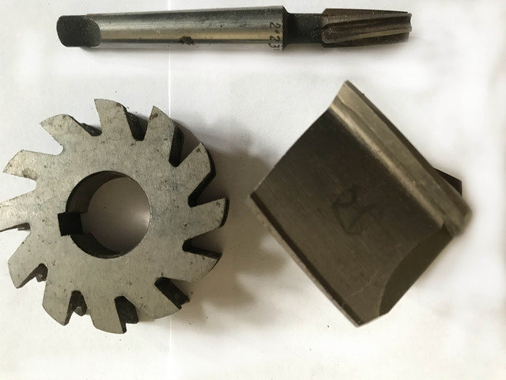

Розгортки, зенкера, зенковкиРазвертки, зенкера, зенковки
Зенкер к\х т\с ф 24.0 КМ3 z3 ВК8 280х150х18Зенкер к\х т\с ф 24.0 КМ3 z3 ВК8 280х150х18
ОписОписание
Зенкер к\х т\с ф 24.0 КМ3 z3 ВК8 280х150х18 — професійний металорізальний інструмент для чорнового та напівчистового зенкерування отворів під розгортання. Основні параметри: діаметр Ø 24.0 мм, розмір 280×150×18 мм, кількість зубів z3 та КМ3. Виготовлено з матеріалу твердий сплав ВК8, що забезпечує стійкість різальної кромки при обробці чавуну, загартованих і абразивних матеріалів. В наявності 8 шт. на складі у Харкові. Ціна 1500 грн без ПДВ. Опт і роздріб, відправлення по всій Україні. Замовлення від 2 000 грн.Зенкер к\х т\с ф 24.0 КМ3 z3 ВК8 280х150х18 — профессиональный металлорежущий инструмент для чернового и получистового зенкерования отверстий под развёртывание. Основные параметры: диаметр Ø 24.0 мм, размер 280×150×18 мм, число зубьев z3 и КМ3. Изготовлен из материала твёрдый сплав ВК8, что обеспечивает стойкость режущей кромки при обработке чугуна, закалённых и абразивных материалов. В наличии 8 шт. на складе в Харькове. Цена 1500 грн без НДС. Опт и розница, отправка по всей Украине. Заказ от 2 000 грн.
ХарактеристикиХарактеристики
| Тип інструментуТип инструмента | ЗенкерЗенкер |
|---|---|
| КатегоріяКатегория | Розгортки, зенкера, зенковкиРазвертки, зенкера, зенковки |
| Діаметр ØДиаметр Ø | 24.0 мм24.0 мм |
| РозміриРазмеры | 280×150×18 мм280×150×18 мм |
| Кількість зубів zКоличество зубьев z | 33 |
| МатеріалМатериал | ВК8ВК8 |
| ХвостовикХвостовик | конічнийконический |
| Конус МорзеКонус Морзе | КМ3КМ3 |
| СтанСостояние | новийновый |
| Код товаруКод товара | FLK-10277FLK-10277 |
| НаявністьНаличие | 8 шт.8 шт. |